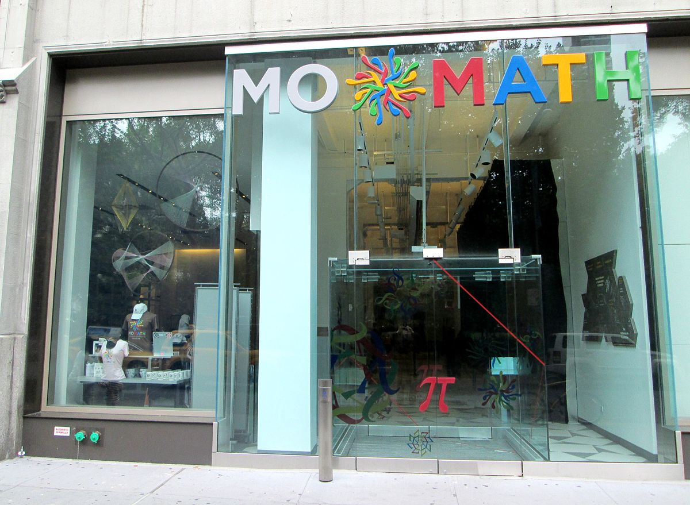

Visit
Mathematics illuminates the patterns that shape the world around us. Visit the National Museum of Mathematics and discover a side of math you’ve never seen before: Explore amazing exhibits, take part in inspiring activities, and have an experience you’ll never forget. MoMath — the coolest thing that ever happened to math!
The Museum is located at 11 East 26th Street in Manhattan and is open from 10:00 am to 5:00 pm, seven days a week, 364 days a year (MoMath is closed on Thanksgiving Day).
Special note: MoMath closes early the first Wednesday of every month, at 2:30 pm.
Directions
By Subway
The nearest subway stops are:
N, R, and W trains to 28th Street/Broadway or 23rd Street
6 train to 28th Street/Park Ave S or 23rd Street
F and M trains to 23rd Street
Please note that the Metropolitan Transit Authority (MTA) has planned repair work for the following subway station in our area:
6 train at 28th Street/Park Av S — The station will be closed July 16, 2018 through December 2018.
For subway maintenance updates, please visit mta.info.
By Bus
The nearest bus stops are:
M1 to Fifth Avenue/West 26th Street
M2 to Madison Avenue/East 27th Street
M3 to Fifth Avenue/West 26th Street
M23 to East 23rd Street/Broadway
By Car
From the Bronx, Queens, and Long Island
Take the Triboro/RFK Bridge to the southbound/downtown FDR Drive. FDR to 34th Street exit. Take 34th Street west. Turn left on Fifth Avenue. Turn left on 26th Street. The Museum will be on your left.
From Brooklyn and Staten Island
Take the Williamsburg Bridge, Manhattan Bridge, Brooklyn Bridge, or Battery Tunnel to the northbound/uptown FDR Drive. FDR to 34th Street exit. Take 34th Street West. Turn left on Fifth Avenue. Turn left on 26th Street. The Museum will be on your left.
From Northern New Jersey
Take the George Washington Bridge to the southbound/dowtown West Side Highway (NY-9A). Turn left onto 34th Street. Turn right on Fifth Avenue. Turn left on 26th Street. The Museum will be on your left.
From Southern New Jersey
Take New Jersey Turnpike to Lincoln Tunnel going toward Manhattan. Exit tunnel, keep right, and follow signs for I-495 East/36th Street/Downtown/Madison Square Garden. Turn left on 34th Street. Turn right on Fifth Avenue. Turn left on 26th Street. The museum will be on your left.
From Upper Westchester
Take New York State Thruway south to the Major William F. Deegan. Turn right at Third Avenue. Take the Harlem River Drive ramp and merge to the southbound/downtown FDR Drive. FDR to 34th Street exit; take 34th Street west; make a left of Fifth Avenue; make a left on 26th Street. The Museum will be on your left.
Admission Fees
Adult $17.00
Toddler (≤ 2 years old) $0.00
Child (≤ 12 years old) $14.00
Student (Student ID required) $14.00
Senior (60+ years old; ID required) $14.00
School Field Trips
MoMath is pleased to present its group offerings. MoMath field trips can accommodate over 500 students daily, with educator sessions spread throughout the course of the day.
Please note that these prices have been set for Pre-K–12 school group visits, Monday – Friday while school is in session.
Field Trip Packages
For the packages below that include an educator session, pricing is based on a flat rate for groups of up to 25 students with an additional fee if there are more than 25 students, up to a total of 36 students. (MoMath’s classrooms have a capacity of 36 students.) Groups larger than 36 students will be broken into multiple groups and charged accordingly, but only one registration form needs to be filled out. Required adults (teachers and parents; one for every nine students) receive free admission for trips that include an educator session; additional adults are charged a $17 admission fee.
MoMath Morning
- $343.75 per group of up to 25 students, $13.75 per extra student up to 36 students
- Arrival any time before 1:00 pm
- Private educator-led, hands-on session in classroom
- Up to 90 minutes free exploration on exhibit floor
Prime P.M.
- $325 per group of up to 25 students, $13 per extra student up to 36 students
- Arrival any time between 1:00 pm and 3:00 pm
- Private educator-led, hands-on session in classroom
- Up to 90 minutes free exploration on exhibit floor
Afternoon Exploration
- $300 per group of up to 25 students, $12 per extra student up to 36 students
- Arrival any time after 3:00 pm
- Private educator-led, hands-on session in classroom
- Up to 90 minutes free exploration on exhibit floor
Double Discovery
- $425 per group of up to 25 students, $17 per extra student up to 36 students
- Arrival any time after 10:00 am
- Two private educator-led, hands-on sessions in classroom
- Up to three hours free exploration on exhibit floor
- Optional 30-minute reservation of classroom space for lunch ($150 additional facility fee)
Exhibit Exploration (no educator session)
- $14 per student and $17 per adult for groups of fewer than 25
- $13 per student and $16 per adult for groups of 25 or more
- Arrival any time after 10:00 am
- Open exploration of dozens of MoMath exhibits
- One adult is required for every nine students